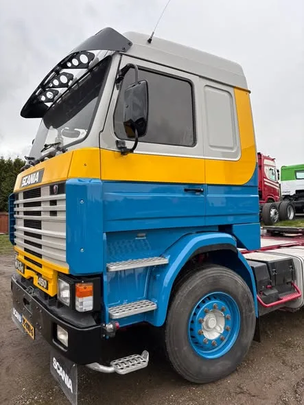
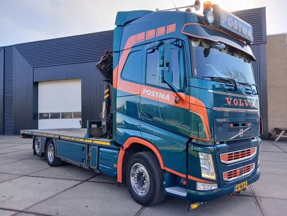
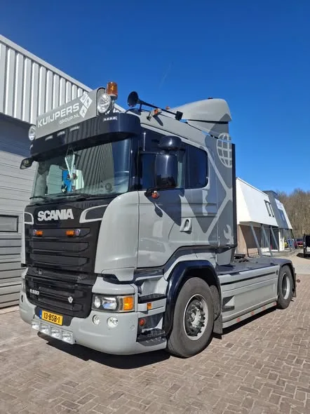

Cabineschade
Van een ingedeukte hoek tot schade aan bumper, spoiler of zijskirts. We herstellen en spuiten de cabine weer in de originele kleur.
Een aanrijding, een paal geraakt bij het laden of schade aan de trailer? Kuperus in Heerenveen herstelt vrachtwagenschade in heel Friesland. Plaatwerk, carrosserie, stralen, spuiten en belettering regelen we als één totaalpakket, zodat u maar één aanspreekpunt heeft en uw wagen zo kort mogelijk stilstaat.
Van een ingedeukte hoek tot schade aan bumper, spoiler of zijskirts. We herstellen en spuiten de cabine weer in de originele kleur.
Schade aan de bak, de schotten of de opbouw van uw trailer of bakwagen. Ook gestraald en opnieuw geconserveerd als dat nodig is.
Voor zwaar carrosseriewerk werken we samen met onze vaste carrosseriehersteller. U houdt één aanspreekpunt, wij regelen de rest.
Gaat de schade via de verzekering, dan stemmen we af met uw verzekeraar of de schade-expert. Liever zelf betalen? Dan krijgt u vooraf een heldere prijs.
Zo werkt het
Stuur een paar foto's van de schade via WhatsApp. Dan weten we snel wat er nodig is.
We bekijken de wagen en stemmen af met u, en waar nodig met de verzekeraar of de expert.
Plaatwerk, carrosserie, stralen, spuiten en belettering, in één planning.
Uw wagen gaat weer de weg op in de originele kleur en huisstijl.
Waarom Kuperus
Sinds 1985 werken we voor transporteurs, dealers en vrachtwagenbedrijven in Friesland. Met een eigen ruime straalcabine, spuitcabines voor vrachtwagens en vaste partners voor carrosserie en belettering regelen we vrachtwagenschade van begin tot eind. Korte lijnen en vaste gezichten.
Voorbeelden



Bekijk meer projecten in Ons werk, of lees over vrachtwagens spuiten in bedrijfskleuren en stralen en conserveren.
Veelgestelde vragen
Ja. Plaatwerk, spuitwerk en kleine carrosseriereparaties doen we zelf. Voor zwaar carrosseriewerk werken we samen met onze vaste carrosseriehersteller, zodat u één aanspreekpunt houdt voor het hele herstel.
Vaak wel. Neem contact met ons op voordat u de wagen ergens heen brengt, dan stemmen we af met u, uw verzekeraar of de schade-expert hoe het herstel het beste kan verlopen.
Natuurlijk. Veel transporteurs laten kleinere schade buiten de verzekering om herstellen, bijvoorbeeld om het eigen risico of de schadevrije jaren te sparen. App foto's van de schade, dan krijgt u snel een indicatie.
Dat hangt af van de schade en de onderdelen. We weten dat een wagen die stilstaat geld kost, dus we plannen het herstel samen met u en houden u op de hoogte.
Ja. Naast cabines herstellen we trailers, opleggers, bakwagens en opbouw. Waar nodig stralen en conserveren we het chassis in onze eigen ruime straalcabine.
App foto's van de schade, dan kijken we snel wat er nodig is. Bellen mag natuurlijk ook.